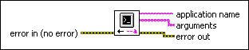

Get Command Line Arguments VI
Owning Palette: Application Control VIs and Functions
Requires: Base Development System
Returns the arguments passed from the command line when LabVIEW or a LabVIEW-built application launched. User-defined arguments start after two hyphens (--) surrounded by spaces in the command line.
If an argument contains double quotation marks ("), this VI returns the argument without the quotation marks.

 Add to the block diagram Add to the block diagram |
 Find on the palette Find on the palette |